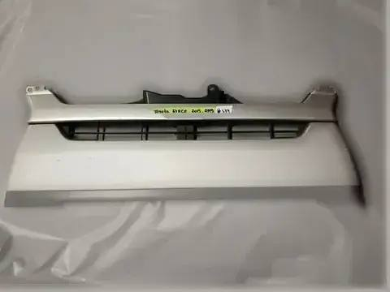
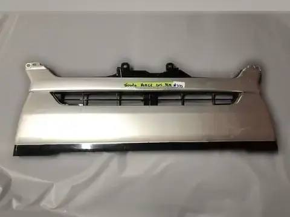

Piezas de carrocería para Toyota Hiace
9 piezas disponibles hoy para Toyota Hiace, cada una con su foto y su código: parrillas (4), lámparas traseras (1), retrovisores (1), defensas traseras (1). Dinos el año de tu carro y te confirmamos si le sirve.
- Garantía de 3 días
- Foto real de cada pieza
- Efectivo, Yappy o ACH
- Lunes a sábado, 8:00 a. m. a 5:00 p. m.
Parrillas para Toyota Hiace 4

534Hiace2015 · original
535Hiace2015 · genérico 536Hiace2015 · original
536Hiace2015 · original 575Hiace2015 · original nuevo
575Hiace2015 · original nuevo 221Hiace
221Hiace RV003Hiace
RV003Hiace DT239Hiace
DT239Hiace DA001Hiace
DA001Hiace